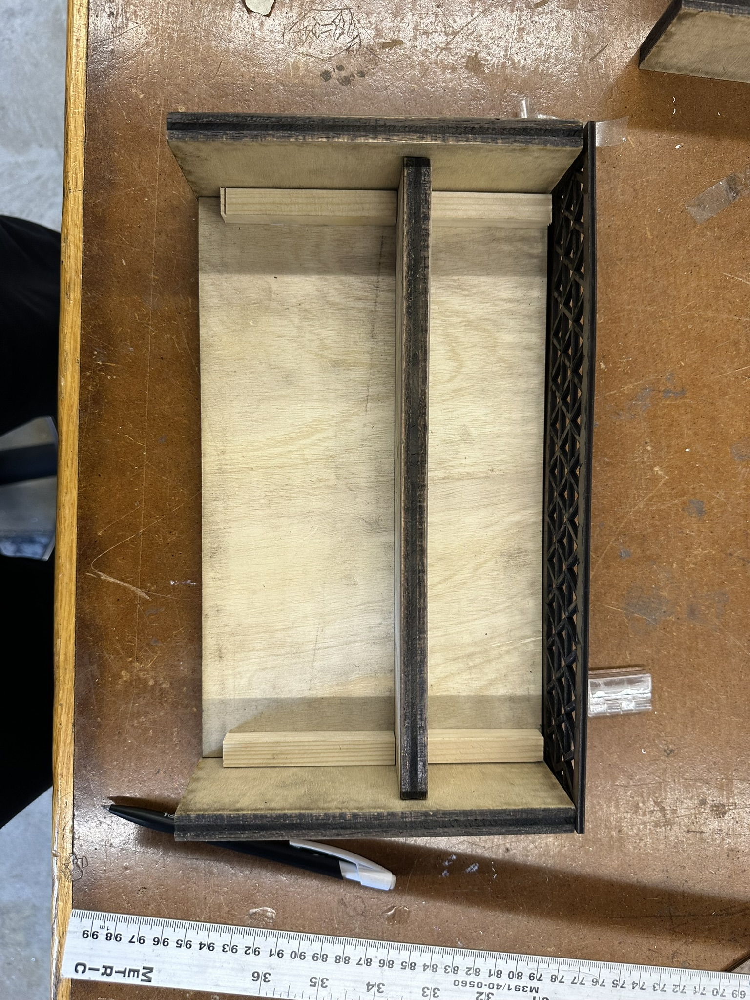
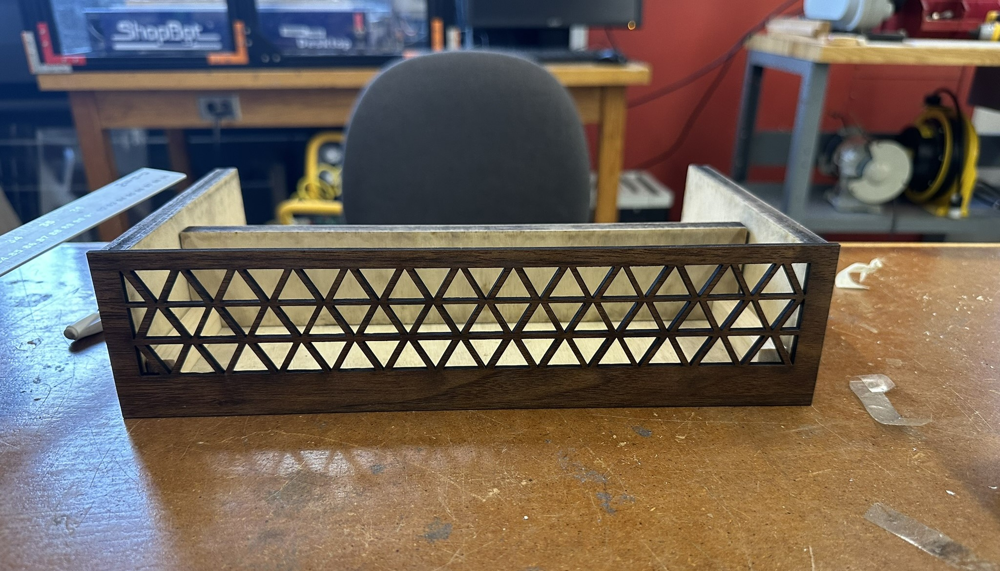
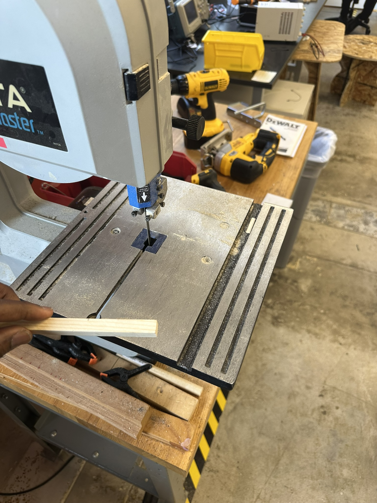
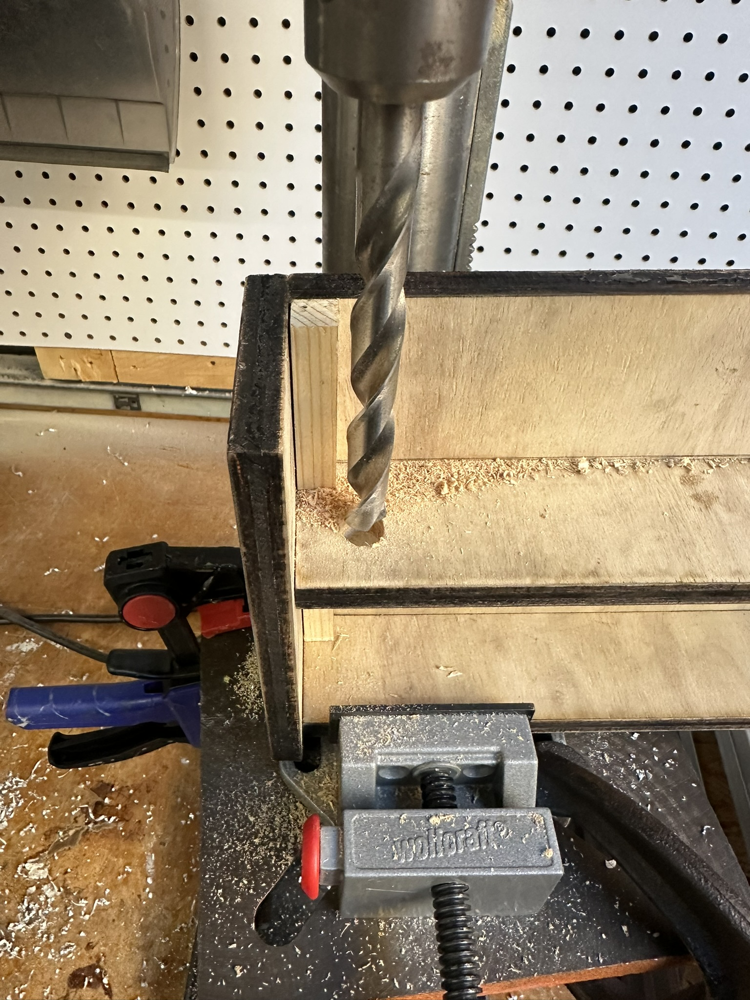
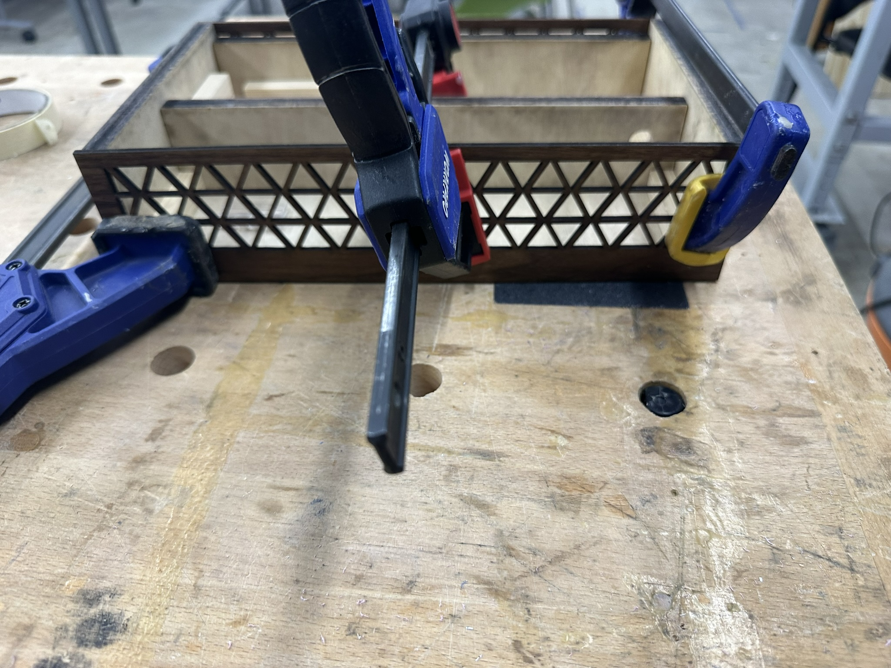
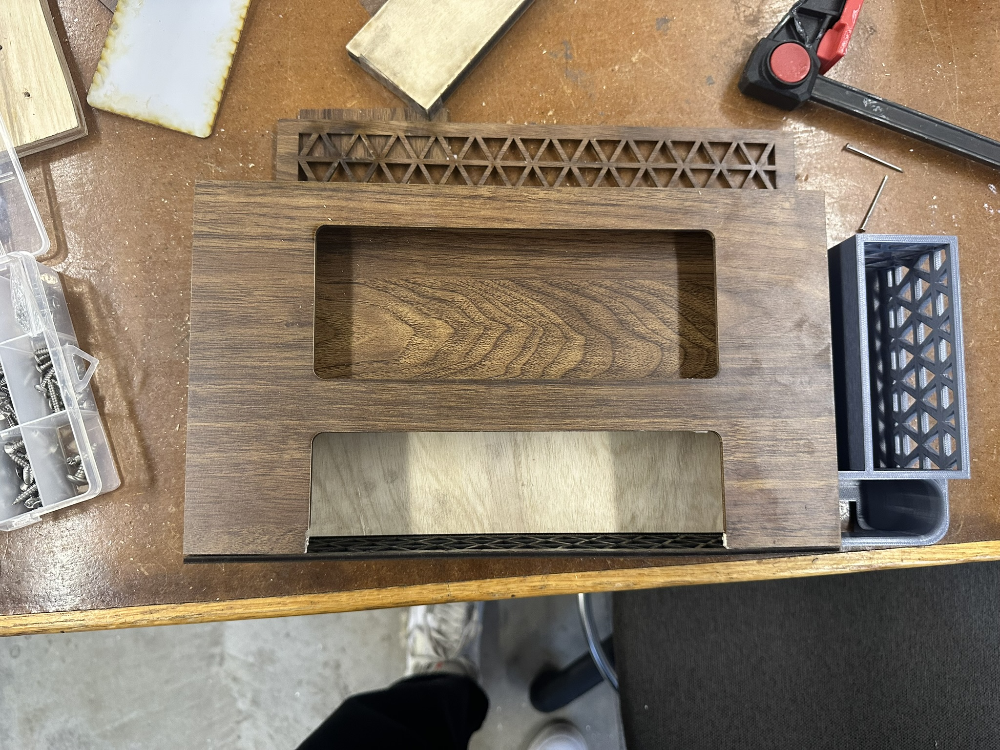

<div class="textcontainer">
<p class="margin"></p>
<h3>Final Project: Contactless Music Player</h3>
<h4>Using RFID Sensors to Control Music</h4>
<div style="display: flex; justify-content: center; align-items: center; margin: 20px 0;">
<video controls style="width: 50vw;">
<source src=".\PS70FinalProjectDemo_ToluAdemolamp4.mp4" type="video/mp4">
Your browser does not support the video tag.
</video>
</div>
<div style="display: flex; justify-content: center; align-items: center; gap: 20px; flex-wrap: wrap; margin: 20px 0;">
<img src=".\FinalProjectPictures\FinalProject1.JPG" alt="Final Project Image 1" style="width: 45%; margin-bottom: 20px;">
<img src=".\FinalProjectPictures\FinalProject4.JPG" alt="Final Project Image 2" style="width: 45%; margin-bottom: 20px;">
<img src=".\FinalProjectPictures\FinalProject3.JPG" alt="Final Project Image 3" style="width: 45%; margin-bottom: 20px;">
<img src=".\FinalProjectPictures\FinalProject5.JPG" alt="Final Project Image 4" style="width: 45%; margin-bottom: 20px;">
</div>
<div style="display: flex; justify-content: center; align-items: center; margin: 20px 0;">
<img src=".\FinalProjectPictures\FinalProject2.JPG" alt="Engineering Design Process Diagram" style="width: 50vw;">
</div>
<h5>Project Overview</h5>
<p style="font: 15px Montserrat-Light;">
This documentation outlines the development process of a contactless music player that uses RFID cards to control song playback on a speaker. The project follows the engineering design process, progressing from initial concept to a fully functional prototype. The inspiration for my project came from my love for listening to music and a need for more ‘aesthetic’ room décor. I combined the concept of contactless smart technology with the nostalgia of a vinyl player. The project also combines sever weeks from PS70 this semester, including but not limited to, hand tools, 2D Design and laser cutting, microcontroller programming, 3D printing, and input/output devices such as sensors.
</p>
<h5>Engineering Design Process</h5>
<p style="font: 15px Montserrat-Light;">
The project adhered to the following engineering design process:
</p>
<ol style="font: 15px Montserrat-Light;">
<li>Brainstorming and Research</li>
<li>Material Selection</li>
<li>MVP (Minimum Viable Product) Development</li>
<li>Iteration and Refinement</li>
<li>Final Implementation</li>
</ol>
<h5>Brainstorming</h5>
<div style="display: flex; justify-content: center; align-items: center; gap: 20px; flex-wrap: wrap; margin: 20px 0;">
<img src=".\FinalProjectPictures\BrainstormingPage1.jpg" alt="Final Project Image 1" style="width: 45%; margin-bottom: 20px;">
<img src=".\FinalProjectPictures\BrainstormingPage2.jpg" alt="Final Project Image 2" style="width: 45%; margin-bottom: 20px;">
<img src=".\FinalProjectPictures\BrainstormingPage3.jpg" alt="Final Project Image 3" style="width: 45%; margin-bottom: 20px;">
<img src=".\FinalProjectPictures\BrainstormingPage4.jpg" alt="Final Project Image 4" style="width: 45%; margin-bottom: 20px;">
</div>
<h5>Material Selection</h5>
<h6>Exterior Materials</h6>
<ul style="font: 15px Montserrat-Light;">
<li>Plywood: Used for the main body structure</li>
<li>Veneer wood: Applied for aesthetic finishing</li>
<li>PLA: Used for 3D printed components</li>
</ul>
<h6>Interior Materials/Electronics</h6>
<ul style="font: 15px Montserrat-Light;">
<li>ESP32 microcontroller</li>
<li>Solderable breadboard</li>
<li>Wires</li>
<li>MP3 Module and SD Card</li>
<li>RFID Module</li>
<li>Audio jack cable</li>
<li>PLA for 3D printed internal parts</li>
</ul>
<h5>MVP Development</h5>
<p style="font: 15px Montserrat-Light;">
The initial MVP aimed to create an RFID-controlled music player on a breadboard. The primary goal was to establish a system where each unique RFID tag corresponded to a specific song stored on the SD card.
</p>
<p style="font: 15px Montserrat-Light;">
Initially, we encountered difficulties with the DFPlayer Mini module. The audio would not play consistently and struggled to read MP3 files from the SD card. To overcome these issues, we transitioned to using the Serial MP3 Modules from DIYables. This module proved more reliable and included a built-in headphone jack, simplifying the audio output process. Below is the code for the inital iteration of the MVP using the DFPlayer MP3 Module.
</p>
<div style="max-height: 400px; overflow-y: auto; border: 1px solid #ccc; border-radius: 5px; background-color: #f9f9f9; padding: 15px; margin: 20px;">
<pre style="font-family: 'Courier New', monospace; font-size: 14px; line-height: 1.5;">
<code>
#include "DFRobotDFPlayerMini.h"
//#include <SoftwareSerial.h> // No longer using it.
DFRobotDFPlayerMini myDFPlayer;
#define RXD2 5
#define TXD2 4
void setup()
{
Serial2.begin(9600, SERIAL_8N1, RXD2, TXD2);
Serial.begin(115200);
delay(200); // My preference for print stability
if (!myDFPlayer.begin(Serial2)) {// Start communication with DFPlayer
// myDFPlayer.begin(Serial1, true, false); // Start communication with DFPlayer
Serial.println("ERROR");
}
Serial.println();
Serial.println(F("DFRobot DFPlayer Mini Demo"));
Serial.println(F("Initializing DFPlayer ... (May take 3~5 seconds)"));
delay(1000); // Add this to allow player to fully initialise
myDFPlayer.volume(15); //Set volume value. From 0 to 30
Serial.println("setup ended"); // I like this reassurance
}
void loop()
{
// myDFPlayer.play(001); // Ensure that your files have been renamed to 001, 002, etc.
myDFPlayer.play(1);
delay(5000); // If you actually want to hear anything each time
}
</code>
</pre>
</div>
<div style="display: flex; justify-content: center; flex-wrap: wrap; gap: 20px; margin: 20px 0;">
<img src=".\FinalProjectPictures\DFPlayerMini.JPEG" alt="MVP Setup Image 1" style="width: 45%; border-radius: 5px;">
<img src=".\FinalProjectPictures\MVP1.JPEG" alt="MVP Setup Image 2" style="width: 45%; border-radius: 5px;">
</div>
<div style="text-align: center; margin: 20px 0;">
<video controls style="width: 60%; max-width: 800px; border-radius: 5px;">
<source src=".\FinalProjectPictures\DFPlayerVideo.MP4" type="video/mp4">
Your browser does not support the video tag.
</video>
</div>
<h5>Final Circuit Design and Code Implementation with DIYables MP3 Player Module</h5>
<div style="display: flex; justify-content: center; flex-wrap: wrap; gap: 20px; margin: 20px 0;">
<img src=".\FinalProjectPictures\MP3SerialCircuitScematic.png" alt="Circuit Diagram 1" style="width: 45%; border-radius: 5px;">
<img src=".\FinalProjectPictures\Circuit_connections.png" alt="Circuit Diagram 2" style="width: 45%; border-radius: 5px;">
</div>
<div style="text-align: center; margin: 20px 0;">
<video controls style="width: 60%; max-width: 800px; border-radius: 5px;">
<source src=".\FinalProjectPictures\MVPSerial Monitor.MP4" type="video/mp4">
Your browser does not support the video tag.
</video>
</div>
<div style="max-height: 400px; overflow-y: auto; border: 1px solid #ccc; border-radius: 5px; background-color: #f9f9f9; padding: 15px; margin: 20px;">
<pre style="font-family: 'Courier New', monospace; font-size: 14px; line-height: 1.5;">
<code>
/*
* This ESP32 code is created by esp32io.com
*
* This ESP32 code is released in the public domain
*
* For more detail (instruction and wiring diagram), visit https://esp32io.com/tutorials/esp32-rfid-mp3-player
*/
#include <SPI.h>
#include <MFRC522.h>
#include <YX5300_ESP32.h>
// *make sure the RX on the YX5300 goes to the TX on the ESP32, and vice-versa
#define RX 16
#define TX 17
YX5300_ESP32 mp3; // the mp3 object
#define SS_PIN 5 // ESP32 pin GPIO5 connected to the SS of the RFID reader
#define RST_PIN 27 // ESP32 pin GPIO27 connected to the RST of the RFID reader
#define SONG_NUM 12 // 3 songs + 3 RFID cards, change it as your need
MFRC522 rfid(SS_PIN, RST_PIN);
byte RFID_UIDs[SONG_NUM][4] = {
{ 0xF9, 0xF5, 0x55, 0x14 }, // song 1
{ 0xB1, 0xDF, 0x27, 0x1D }, // song 2
{ 0x37, 0x23, 0x27, 0x7B }, // song 3
{ 0xb8, 0x92, 0x1c, 0x33 }, // song 4
{ 0x07, 0x4b, 0x3a, 0x7b }, // song 5
{ 0xb7, 0x90, 0x2a, 0x7b }, // song 6
{ 0xf7, 0x3c, 0x28, 0x7b }, // song 7
{ 0xf7, 0x08, 0x2a, 0x7b }, // song 8
{ 0xa1, 0x8a, 0xec, 0x1d }, // song 9
{ 0x27, 0xa6, 0x91, 0x75 }, // song 10
{ 0xdf, 0x80, 0x54, 0x9e }, // song 11
{ 0xd3, 0x70, 0x1e, 0x19 } // song 12
// ADD MORE IF NEEDED
};
void setup() {
Serial.begin(9600);
Serial2.begin(9600);
delay(500); // wait chip initialization is complete
mp3 = YX5300_ESP32(Serial2, RX, TX);
delay(200); // wait for 200ms
SPI.begin(); // init SPI bus
rfid.PCD_Init(); // init MFRC522
Serial.println("Tap RFID Tag on reader");
}
void loop() {
if (rfid.PICC_IsNewCardPresent()) { // new tag is available
if (rfid.PICC_ReadCardSerial()) { // NUID has been readed
Serial.print("Tag UID:");
for (int i = 0; i < rfid.uid.size; i++) {
Serial.print(rfid.uid.uidByte[i] < 0x10 ? " 0" : " ");
Serial.print(rfid.uid.uidByte[i], HEX);
}
Serial.println();
for (int index = 0; index < SONG_NUM; index++) {
if (rfid.uid.uidByte[0] == RFID_UIDs[index][0] && rfid.uid.uidByte[1] == RFID_UIDs[index][1] && rfid.uid.uidByte[2] == RFID_UIDs[index][2] && rfid.uid.uidByte[3] == RFID_UIDs[index][3]) {
Serial.print("Playing song ");
Serial.println(index);
mp3.playTrack(index+1);
// mp3_command(CMD_PLAY_W_INDEX, index); // Play mp3
}
}
rfid.PICC_HaltA(); // halt PICC
rfid.PCD_StopCrypto1(); // stop encryption on PCD
}
}
}
</code>
</pre>
</div>
<h5>Building on the MVP</h5>
<h6>Exterior Design</h6>
<p style="font: 15px Montserrat-Light;">
The exterior design drew inspiration from vintage vinyl players, aiming to blend retro aesthetics with modern technology.
</p>
<div style="display: flex; justify-content: center; flex-wrap: wrap; gap: 20px; margin: 20px 0;">
<img src=".\FinalProjectPictures\BasePlateCAD.png" alt="Base Plate CAD Design" style="width: 45%; border-radius: 5px;">
<img src=".\FinalProjectPictures\Front_CoverCAD.png" alt="Front Cover CAD Design" style="width: 45%; border-radius: 5px;">
<img src=".\FinalProjectPictures\CompelteCADAssembly.png" alt="Complete CAD Assembly" style="width: 45%; border-radius: 5px;">
</div>
<h6>Fabrication Process</h6>
<ol style="font: 15px Montserrat-Light;">
<li>Laser cut wood parts were designed parametrically using Fusion 360.</li>
<li>Post-processing included sanding and filing to remove soot from plywood edges.</li>
<li>Components were joined using screws and a power tool, with wood rods used internally for structural support.</li>
<li>Wood veneer panels were attached to the front and back using wood glue.</li>
<li>Used clamps to help hold the wood pieces together for stronger adhesion.</li>
<li>A 3D printed holder was created for the RFID cards.</li>
</ol>
<div style="display: flex; justify-content: center; flex-wrap: wrap; gap: 20px; margin: 20px 0;">
<p></p>
<p></p>
<p></p>
<p></p>
<p></p>
<p></p>
</div>
<h6>Electronics Integration</h6>
<ol style="font: 15px Montserrat-Light;">
<li>Transitioned from breadboard to a solderable breadboard for improved reliability.</li>
<li>Soldered circuit components onto the solderable breadboard.</li>
<li>3D printed a custom holder for the circuit board.</li>
</ol>
<div style="display: flex; justify-content: center; flex-wrap: wrap; gap: 20px; margin: 20px 0;">
<img src=".\FinalProjectPictures\InteriorAssembly1.JPEG" alt="Interior Assembly Step 1" style="width: 45%; border-radius: 5px;">
<img src=".\FinalProjectPictures\InteriorAssembly2.JPEG" alt="Interior Assembly Step 2" style="width: 45%; border-radius: 5px;">
</div>
<h5>Challenges and Learning Outcomes</h5>
<p style="font: 15px Montserrat-Light; text-align: justify;">
Throughout the project, several challenges were encountered:
</p>
<ol style="font: 15px Montserrat-Light; margin-left: 20px;">
<li>ESP32 and RFID library compatibility issues were resolved by researching library documentation.</li>
<li>Transitioning from the DFPlayer Mini to the MP3 Serial Player Module improved reliability and ease of use.</li>
<li>Laser cutting the exterior components had some challenges because my dimensions were slightly off for the top cover. I had to complete a few rounds of laser cutting to have the top panel attached correctly to the body of the music player.</li>
</ol>
<p style="font: 15px Montserrat-Light; text-align: justify;">
The contactless music player project has numerous avenues for future enhancement and expansion. Key areas for improvement include integrating with popular streaming services like Spotify to broaden music access, miniaturizing the device for increased portability, and adding wireless capabilities such as Bluetooth and Wi-Fi for enhanced connectivity. The user experience could be elevated by incorporating a more sophisticated interface with displays and companion apps (e.g., phone integration), while expanding RFID functionality could open up creative interaction possibilities. These developments would transform the current prototype into a more advanced, user-friendly, and adaptable music player, catering to a wider audience and diverse use cases.
</p>
<h5>Conclusion</h5>
<p style="font: 15px Montserrat-Light; text-align: justify;">
This project demonstrated the successful integration of RFID technology with audio playback, packaged in an aesthetically pleasing, vintage-inspired enclosure. The iterative design process and problem-solving approaches employed throughout the project provided valuable learning experiences in both electronic and mechanical design.
</p>
</div>